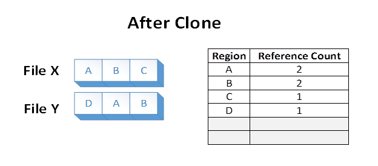

A block clone operation instructs the file system to copy a range of file bytes on behalf of an application. The destination file may be the same as, or different from, the source file.
A file system manages the mappings of Clusters and Extents, and may be able to perform the copy by altering the virtual cluster number (VCN) to logical cluster number (LCN) mappings as a low-cost metadata operation, rather than reading and writing the underlying file data. This allows the copy to complete faster and generates less I/O to the underlying storage. Moreover, multiple files may now share logical clusters after the block clone, saving capacity by not storing identical clusters multiple times on disk.
A block clone operation does not break the isolation provided between files. After a block clone completes, writes to the source file do not appear in the destination, or vice versa.
Block cloning is available only on the ReFS file system type beginning with Windows Server 2016. Starting with the Windows 11 Moment 5 update (KB5034848) and later releases of Windows client and Windows Server builds, block cloning occurs natively in supported Windows copy operations.
ReFS on Windows Server 2016 implements block cloning by remapping logical clusters (that is, physical locations on a volume) from the source region to the destination region. It then uses an allocate-on-write mechanism to ensure isolation between those regions. The source and destination regions may be in the same, or different, files.
This implementation requires that the starting and ending file offsets be aligned to cluster boundaries. In ReFS on Windows Server 2016, clusters are 4KB in size by default, but can optionally be set to 64KB. The cluster size is a volume-wide parameter set at format time.
Suppose we have two files, X and Y, where each file is composed of 3 distinct regions. Each file region is stored on a distinct region of the volume. The file system stores the knowledge that each of those volume regions is referenced in one file region:
Now suppose an application issues a block clone operation from File X, over file regions A and B, to File Y at the offset where E currently is. The following file system state would result:

The data in regions A and B were effectively duplicated from File X to File Y by altering the VCN to LCN mappings within the ReFS volume. The disk extents backing regions A and B were not read, nor were the disk extents backing the old regions E and F overwritten during the operation.
Files X and Y now share logical clusters on disk. This is reflected in the reference counts shown in the table. The sharing results in lower volume capacity consumption than if regions A and B were duplicated on the underlying volume.
Now, suppose the application overwrites region A in File X. ReFS makes a duplicate copy of A, which we’ll now call G. ReFS then maps G into File X, and applies the modification. This ensures that isolation between the files is preserved. Reference counts are updated appropriately:
After the modifying write, region B is still shared on disk. Note that if region A were larger than a cluster, only the modified cluster would have been duplicated, and the remaining portion would have remained shared.